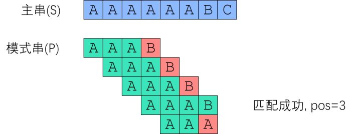
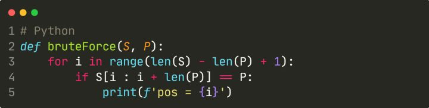
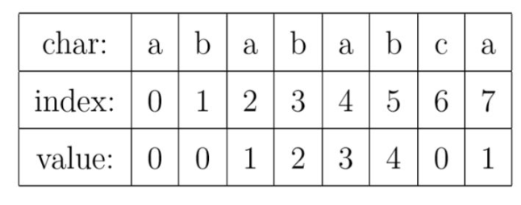
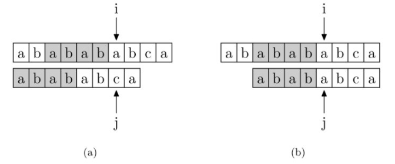
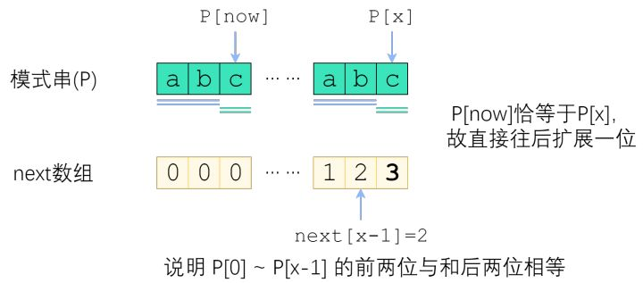
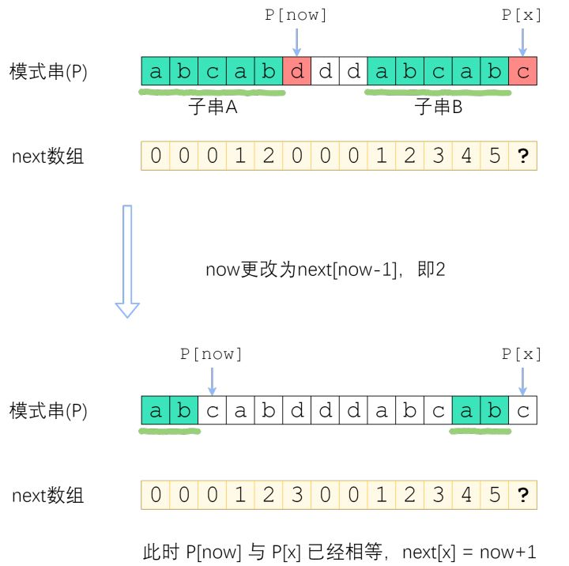

前言
本文整理了KMP算法的原理及代码，可以使用LEETCODE上的题目进行测试：28. 实现 strStr()。
从Brute-Force算法说起
BF算法是最为简单的一种字符串匹配算法，它采用纯暴力匹配的思想。对于目标串S和模式串P，其基本匹配思路如下：
- 枚举 i = 0, 1, 2 … , len（S）-len（P）
- 将 S[i : i+len（P）] 与 P 作比较。如果一致，则找到了一个匹配。

BF算法的缺点在于每一次都是将目标串中的指针直接回溯为i+1。
我们记 n = |S| 为串 S 的长度，m = |P| 为串 P 的长度。不难想到，最坏情况下其时间复杂度为$O(MN)$。

KMP算法：Brute-Force算法的优化
为了优化BF算法，我们需要尽可能地减少匹配的趟数。那么，我们如何达到这一目的呢？
如果把模式串视为一把标尺，在主串上移动，那么 Brute-Force 就是每次失配之后只右移一位；改进算法则是每次失配之后，移很多位，跳过那些不可能匹配成功的位置。为了减少重复匹配，我们需要在失配处计算移动的位数，而不是单纯的回退目标串和模式串中的指针。通过一个名叫“部分匹配表”的东西，我们可以跳过绝不可能匹配成功的字符串比较，从而实现算法的优化。
部分匹配表
部分匹配表（Partial Match Table）的含义为：
对于长度为m的字符串P，部分匹配表是与之对应的长度为m的一个数组PMT。
PMT[i]的值等于：字符串P的前i位字符组成的子字符串中，前缀集合和后缀集合中公共子串（前缀和后缀不包括自身）的最大长度。
对于字符串“abababca”，它的PMT如下表所示：

例如，对于”aba”，它的前缀集合为{”a”, ”ab”}，后缀 集合为{”ba”, ”a”}。两个集合的交集为{”a”}，那么长度最长的元素就是字符串”a”了，长 度为1，所以对于”aba”而言，它在PMT表中对应的值就是1。再比如，对于字符串”ababa”，它的前缀集合为{”a”, ”ab”, ”aba”, ”abab”}，它的后缀集合为{”baba”, ”aba”, ”ba”, ”a”}， 两个集合的交集为{”a”, ”aba”}，其中最长的元素为”aba”，长度为3。
如何使用部分匹配表进行优化

我们以上图为例进行说明。当目标串S的指针为i，模式串P的指针为j时，此时匹配失败了。按照BF算法，我们会将i回退至下标为1处，j回退至下标为0处继续匹配。这显然是很笨拙的。
通过观察，我们可以发现， S[:i] 和 P[:j] 是成功匹配的，只是 S[i] 和 P[j] 不相同。
这时，我们在上一节所得的模式串的部分匹配表就派上了用场。通过 PMT[j-1] ，我们可以得知，P[:j] 这一子串中前后缀公共子串的最大长度为4。又因为 S[:i] 和 P[:j] 是相等的，所以 P[:j] 的后缀也就是 S[:i] 的后缀。那么，我们可以推知目标串i之前的4位和模式串开头的4位是相同的。就是图中的灰色部分。那这部分就不用再比较了。
有了上面的思路，我们就可以使用PMT加速字符串的查找了。我们看到如果是在 j 位 失配，那么影响 j 指针回溯的位置的其实是第 j −1 位的 PMT 值。
以上其实就是KMP算法的基本思想了，我们总结一下：KMP算法的目的是使用部分匹配表，来跳过必不可能成功的匹配，减少匹配的趟数。
KMP算法的流程
我们现在来总结一下KMP算法主程序的基本流程：
假设现在文本串 S 匹配到 tar 位置，模式串 P 匹配到 pos 位置：
如果当前字符匹配成功，则tar++，pos++，继续匹配二者的下个字符。若当前的pos等于模式串的长度，则说明全部匹配成功，此时可以返回tar减去pos的值，即模式串在目标串中出现的首个字符的下标。
如果当前匹配失败，且pos大于0，说明此时模式串已经成功匹配了部分字符，可以尝试利用部分匹配表跳过必然无法匹配成功的子串，令pos=PMT[pos-1]。
如果匹配失败，且pos等于0，说明此时模式串的第一个字符就无法匹配，则tar++，尝试与目标串的下个字符匹配。
根据上述的流程，我们可以编写KMP算法主体函数如下：
def match(st,pattern):
tar=0
pos=0
PMT=getPMT(pattern)
while (tar<len(st)):
if (st[tar]==pattern[pos]):
tar+=1
pos+=1
if (pos==len(pattern)):
return tar-pos
elif (pos>0):
pos=PMT[pos-1]
else:
tar+=1
return -1KMP算法的难点：获取部分匹配表
KMP算法的基本思想其实并不难，但KMP算法主要的难点在于如何求解模式串的PMT数组。这里我们可以采取动态规划的方式求解。
- 问题：对于模式串P，已知PMT[0],PMT[1],PMT[2]…PMT[x-1]，求解PMT[x]。
观察上述问题，我们发现，该问题符合最优子结构和重叠子问题的动态规划要求，动态规划具体的转移情况我们进行分类讨论。
- 情况一：已知now=PMT[x-1]，若P[x]==P[now]，则PMT[x]=now+1。如下图所示，因为我们已知前x-1个字符中有长度为now的公共前后缀，如果当前前缀的后一位P[now]等于当前后缀的后一位P[x]，则公共前后缀长度自然可以加1。

- 情况二： 若P[x]!=P[now]，则令now=PMT[now-1]，再次尝试比较P[x]和P[now]，如果相等则PMT[x]=now+1，如果不相等再重复之前的过程，直到now等于0。如下图所示，此时由于子串A必然与子串B相等，则子串A的后缀与子串B的后缀必然相同，所以子串A的最大公共前后缀即为前x-1个字符中第二长的公共前后缀。

根据上述分析，我们可以编写获取模式串PMT数组的代码如下：
def getPMT(p):
PMT=[0]#PMT[0]必定为0
x=1
now=0
while (x<len(p)):
if (p[now]==p[x]):
now+=1
PMT.append(now)
x+=1
elif now>0:
now=PMT[now-1]
else:
PMT.append(now)
x+=1
return PMT至此，KMP算法介绍完毕。
总结：
KMP算法在我看来，主要有两方面的内容，一是通过动态规划求解模式串的部分匹配表；二是通过部分匹配表来跳过必不可能的情况，提升匹配的速度。其核心难点在于PMT动态规划的转移方程，需要静下心来自己推导一遍。
我们不难看出，对于长度为M的目标串S和长度为N的模式串P，KMP算法的时间复杂度由两部分组成：一是match函数中需要让指针遍历目标串S的每一个位置，需要耗费$O(M)$的时间，二是getPMT函数中计算部分匹配表，这一部分我们采用均摊时间复杂度分析，可以发现耗费的时间为$O(N)$。
利用KMP算法，我们将BF算法的时间复杂度$O(MN)$成功降为$O(M+N)$，使速度大大提升。